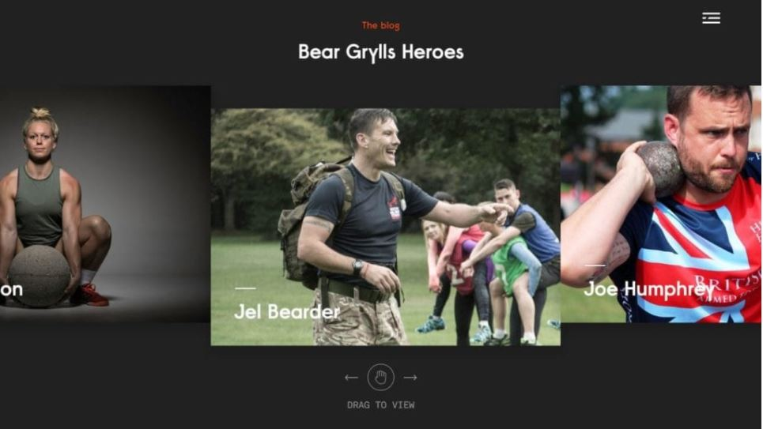

The principles of colour psychology in web design.
There are many factors to consider when gauging the success of a website. For most businesses, conversions are the single biggest indicator that their website is performing well. Did you know that colour psychology in web design can impact those conversions?
It’s a great indication of user experience success when visitors fill out a contact form, sign up for a newsletter, or register for a webinar. And of course, a primary end goal is to have users purchase a product or service that your site is offering.
User experience and user interface design undeniably play a huge role in a website’s success. The same goes for colour and how it’s used in your web design. Colour psychology is a potent web design tool, and more and more designers are using it to convey key messages and impact the attitudes and emotions of people.
Industrial psychology has a sub-field called color psychology. It’s become increasingly important for designers in all mediums and industries to have an understanding of the basic principles to be able to employ color in their work, and elicit the emotional responses that drive results. Over the years, color psychology has been used to serve various purposes. Some colors have proven useful for conveying a message, both negative and positive. Colors have the power to calm, or to incite excitement and action. Color can also influence the way you work out, the way you feel in a room or building, and even the way you choose what to order in a restaurant. Colors can drive sales as well, by tapping into subconscious human emotions and generating optimal responses.
Every website aims to hook each visitor's attention and elicit specific reactions and emotions with the goal to earn clicks, subscriptions, registrations, and purchases. Color psychology in web design is a tool to help drive those engagements above and beyond interfaces, user flows, and copy. In color psychology there are values, emotions, and even physiological reactions closely associated with certain colors. Here’s an overview of the values, attitudes, and feelings typically associated with common colors, and how you can use them in your digital strategy.
Colour psychology in web design: practical uses
Red
Red conveys a sense of urgency. If your goal is to promote a clearance sale, using red in ads or graphics immediately draws attention, makes the viewer eager to complete the interaction, and instills the fear of missing out at the same time. The colour red is incredibly stimulating, which makes it highly popular in sales materials. Red is also the colour of passion, and unfortunately jealousy, danger, and violence are also associated with it. Use red judiciously to grab the reader’s eye, and lighten the mood with supporting copy and imagery.
Blue
Dependability, intelligence, trust, safety, and security are closely associated with the colour blue, making it quite popular in the business world — especially the financial sector. Many people also find blue to be soothing and relaxing. Blue is often used in web design palettes and logos for industries that require a high level of trust, such as insurance, banking, and cybersecurity. Blue can also denote sadness; in some countries, blue is a colour of mourning. Use soft blues to relax your audience, and vivid blues for an air of credibility. Relaxation and trust will drive conversions.
White
In the Western world, white represents innocence, virtue, and purity. It’s also closely associated with hygiene and cleanliness, which explains its wide use in the healthcare industry. White can denote cleanliness, order, and traditional values. Many news websites also use white to call up the trustworthy sensation of reading a newspaper. Use white in your website palette to let content stand out, and foster a feeling of honesty that will result in conversions.
Black
While black is widely associated with darkness and death in many cultures, it has earned a reputation for elegance, sleekness, and glamour in the advertising industry. Black projects power, and is commonly used in ads for luxury products. Use black to emphasize the unique, elite sense of your brand or product, making visitors want to be a part of that special club. Black accents create a sharp contrast to other page elements, and play well with vivid colours for a sleek, modern feel.
Yellow
If you want to cheer up your readers and make them feel optimistic and warm, the colour yellow can help you make it happen. Some people even claim that this sunny colour makes them feel younger. Yellow is often seen on parenting, wellness, and travel websites. Use yellow to make your website — and your brand — feel approachable, welcoming, and friendly. Don’t use too much of it though, as yellow can be quite overwhelming. Yellow accents also work well on neutral palettes, livening up content without impacting the professional look and feel.
Green
Green will forever be associated with the environment. It calls to mind summer, outdoor activities, healthy foods, and overall wellness. Websites that advocate environmental causes or sell outdoor products often have a green theme. Along with blue, green is associated with relaxation as it’s easy on the eyes. Green is a great way to put visitors at ease. Green also projects decisiveness. Use green to give readers the feeling of being healthy, lively, and content. This will create the sense that everything will be better with your product or service.